Um app de saúde
compartilhada,
desenhado em torno
da sessão.
Multiterapia é um gestor de terapias multidisciplinares — fonoaudiologia, fisioterapia e psicologia — que conecta o consultório do terapeuta à rotina do paciente em um único produto. Esta análise revisa a base de marca, mapeia os fluxos das 10 telas iniciais e aponta onde está sólido, onde tem lacunas e por onde seguir.
O sistema visual já está coerente — e isso é raro num MVP.
A marca chega com guideline fechado, paleta calibrada, ícone em três variantes, splash light/dark e tipografia única. O essencial para construir interfaces consistentes desde o primeiro sprint já está em pé.
Paleta
Teal carrega a confiança clínica; coral guarda o calor humano — usado com parcimônia, ele marca o momento vivo (sessão acontecendo, CTA do paciente, mensagem ativa). Os neutros bege funcionam como respiro, evitando a frieza típica de software médico.
Tipografia · Poppins
Variantes da marca
Dois aplicativos em um só — terapeuta e paciente.
O onboarding bifurca a experiência logo na entrada. A partir daí, cada persona tem seu próprio shell, mas dividem componentes, paleta e o chat como ponte. Esta decisão é forte: reduz custo de produto e mantém a coerência da marca em dois lados da mesma relação.
Marina, fonoaudiólogaGestão de agenda, pacientes e sessões
Carlos, 5 anos · FonoAcompanhamento da jornada terapêutica
As 10 telas, em light e dark, com notas curtas.
Para cada tela: o que está bem resolvido, onde há tensão de UX, e oportunidades para a próxima rodada de design.
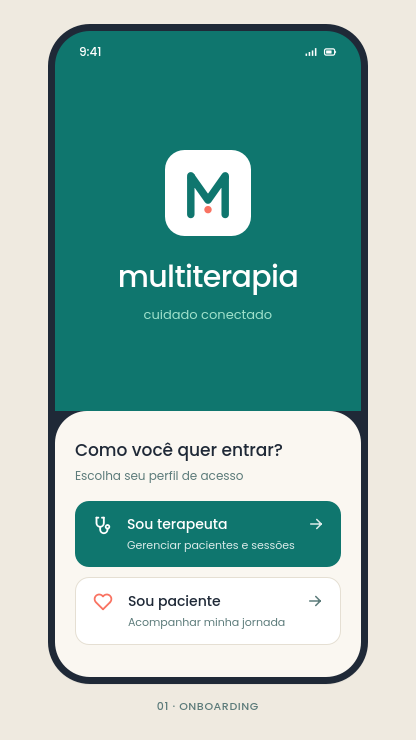
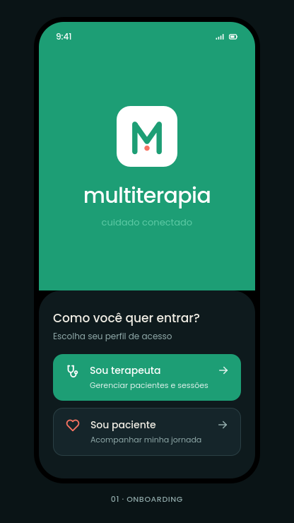
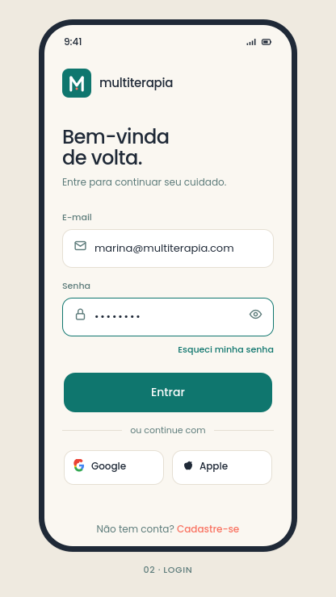
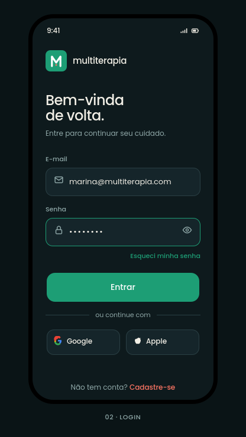
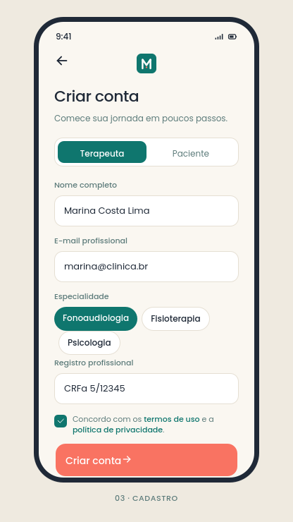
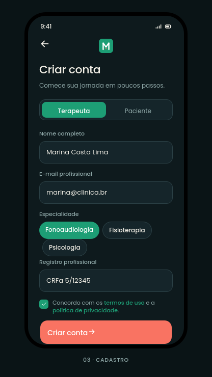


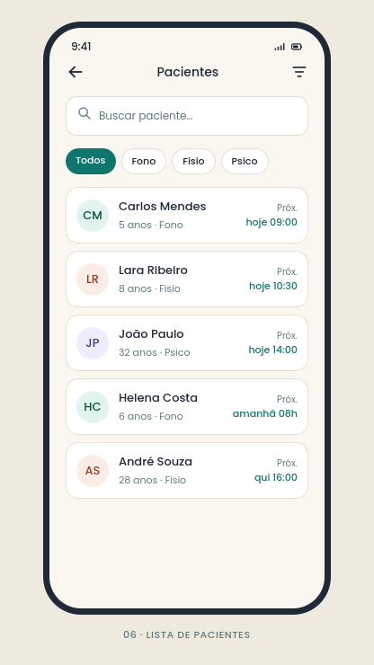
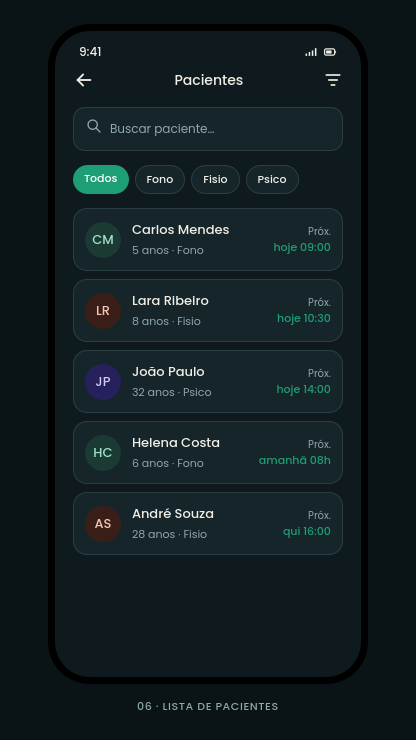

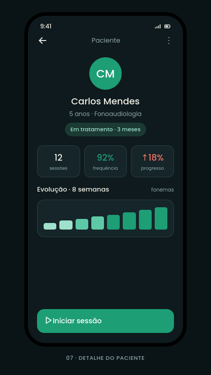

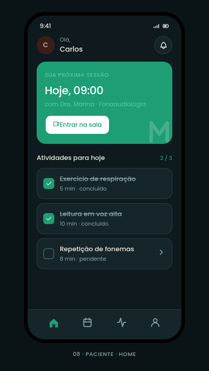
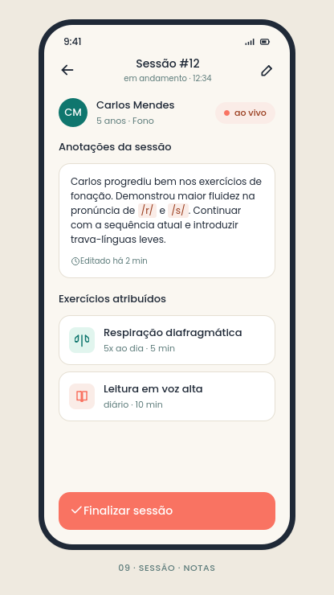


Os componentes que já se repetem nas 10 telas.
Inventário dos blocos visuais que apareceram pelo menos duas vezes. São candidatos naturais a virar componentes nomeados no design system.
Botões
Dois pesos. Teal para a ação primária recorrente; coral para o gesto que marca o momento (criar, iniciar, finalizar).
Chips de filtro
Aparecem em cadastro (especialidade) e lista de pacientes (filtro). Mesmo componente, dois usos.
Status / pílulas
Codificam estado de sessão. Coral = ao vivo / em andamento. Teal claro = confirmada.
Linha de sessão
Cartão horário + nome + especialidade + status. Aparece em 04, 05, 06 — base da agenda.
KPI cards
Três métricas numéricas em linha, valor em teal, label muted. Hoje (04) e Detalhe (07) usam o mesmo molde.
Avatar inicial
Círculo teal com 1–2 letras. Substituível por foto quando existir. Usado em todas as listas.
Input field
Borda fina, raio 10–12px, ícone à esquerda. Padrão único em login, cadastro, busca e chat.
Cartão de seção
Container com 1px border, 18px radius, fundo papel. Estrutura quase todas as telas internas.
O que segurar — e o que ainda precisa de resposta.
Resumo executivo da revisão. Use como checklist para a próxima rodada de design.
✓ Pontos fortes
- 01Marca pronta antes do produto. Brand guide, três variantes de ícone, splash em 1x/2x/3x, light/dark — base de produção já está em pé.
- 02Paleta com função, não decoração. Teal = confiança, coral = momento vivo, bege = respiro. Cada cor carrega significado clínico.
- 03Bifurcação clara dos personas. Terapeuta e paciente têm shells diferentes mas dividem chat, paleta e linguagem — economiza produto sem perder especificidade.
- 04Microcopy quente em PT‑BR. "cuidado conectado", "Bem‑vinda de volta", "Entrar na sala" — soam humanos, não institucionais.
- 05Dark mode tratado como cidadão de primeira. Não é inversão automática — bordas, contrastes e elevações foram redesenhados.
! Lacunas e atenções
- 01Falta o shell de navegação do terapeuta. Paciente tem tab bar (tela 08), terapeuta não — como ele transita entre Hoje, Agenda, Pacientes, Chat?
- 02Templates clínicos por vertical. Notas de sessão (09) servem fono; fisio precisa de séries/reps; psico precisa de SOAP. Um único editor não escala.
- 03Validação de registro profissional. CRFa/CREFITO/CRP como campo livre vira problema regulatório. Integração com base profissional é trabalho de descoberta.
- 04Compliance LGPD do chat. Conversas clínicas têm regras de retenção, consentimento e portabilidade. Precisa de auditoria jurídica antes do beta.
- 05Estados vazios e de erro. As 10 telas mostram o caminho feliz. Lista vazia, erro de rede, sessão cancelada, paciente sem evolução ainda não existem.
- 06Coral usado para "progresso ↑18%" (07) conflita com coral usado para "alerta / ao vivo". Definir semântica única por cor.
Quatro fases para sair das 10 telas para um beta privado.
Ordenado por dependência: cada fase desbloqueia a próxima. Cronograma de exemplo, não compromisso.
Fechar o shell
- Tab bar do terapeuta
- Estados vazios + loading
- FAB com rótulo de ação
- Tokens em JSON / Flutter theme
Profundidade clínica
- Templates por vertical (fono · fisio · psico)
- Histórico de sessões no perfil
- Bloqueio / criação de sessão na agenda
- Anexo de exercícios da sessão
Conectividade
- Sala de vídeo integrada à sessão
- Quick replies + status do chat
- Notificações (lembrete · andamento)
- Login social por perfil
Confiança e escala
- Validação de registro profissional
- Auditoria LGPD do chat clínico
- Foto de paciente + permissões
- Métricas de retenção e adesão